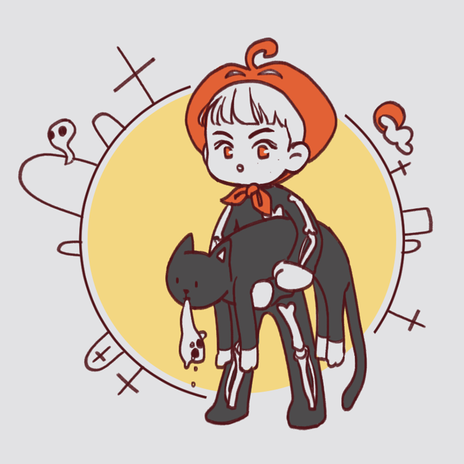

꿈에 가짜 이민형이 더는 나오지 않았다. 어차피 진짜도 아니고 내가 듣고 싶은 말만 해주는 허상이라 미안해할 필요는 없었다. 그래도 이민형이랑 똑같은 얼굴을 하고 있다고, 그것땜에 꿈의 장면을 떠올릴 때마다 속이 쓰렸다. 더 이상 꿈일기를 쓸 수 없었다. 그래서 일기를 올리던 sns 계정을 삭제하기로 했다. 오랜만에 들어가니까 읽지 못한 알림 배지가 꽤 쌓여있었다. 아는 얼굴과 이름들이 팔로우 신청을 했고, 몇 개의 댓글을 달았다. 동혁아 너 진짜 꿈 스펙타클하다. 그걸로 글 쓰면 먹고살 수 있겠다. 동혁아 오랜만이다 여기 잘 안 써? 친신 안 받아주네. 번호 있음 연락해 오랜만에 술 한번 먹자. 별로 신경 쓰고 싶지 않은 댓글들이라 답글을 남기지 않았다. 알림 목록을 쭉 내리는데 얼핏 익숙한 영문 이름이 보여 스크롤을 왔다 갔다 하며 재차 확인했다.
......이거 mark__leeee 라고 써 있는 거 맞지. 진짜 이민형이 자기 이름이라고 알려줬던 거다. 마크.
3일 전 알림이었다. 이민형이 나한테 친구 신청을 보냈다. 날 어떻게 알아봤지? 그냥 아는 친구 많아서 보낸 건가? 그렇다고 하기엔 내 아이디가 너무 나를 가리키고 있어서, 신청하려다가도 멈칫했겠지. 이거 이동혁 아닌가 하고. 나는 알고 보냈다고 믿고 싶었다.
친구 신청 말고도 알림이 하나 더 있었다. 어떤 일기에 좋아요를 눌러놨다. 꿈속의 가짜 이민형과 함께 달조각 크래커를 먹고선 하와이 얘길 하고, 제주도의 바다에 간 기록이었다. 이민형은 나랑 하와이에 가고 싶다고. 자주 말했었다. 주말에 같이 제주도에 놀러 가기도 했다. 먼저 떠난 사람의 미련이라고 생각해서 꾹 잊어놓고 있었다. 밤늦게 만나 한적한 아파트단지를 함께 거닐면서 샛노랗게 뜬 달을 보고, 나는 달이 너무 좋다고. 자꾸 말했었다 이민형한테. 왜 좋냐면 형 같아서. 새까만 곳에서 혼자 빛날 줄 아는게 형 같아서 좋아한다고 그랬다. 이민형은 알고 누른 거다. 내가 은근슬쩍 자기랑 관련된 얘길 꿈꿨다고 떠들어서.
그래도 어떻게 이렇게 훌쩍 헤어지고 안 만나고 연락도 없는 사람한테 친구 신청을 보내냐. 진짜 뻔뻔하다... 근데 형은 나한테 뻔뻔해도 됐다. 형의 뻔뻔함을 부러워만 하고 꿈으로만 만났던 나는 그럴 자격이 없다. 그래서 나에게 연락을 취한 형에게 응답해도 괜찮은건지 모르겠다. 핸드폰을 움켜쥐고 한참 고민을 했다. 생각에 환기를 좀 시켜주려고 활짝 웃는 사진이 프로필로 지정된 형의 계정을 눌러 들어가 봤다. 게시물은 몇 개 없었다. 아마도 캐나다 친구들, 가족들과 찍은 사진 몇 개가 전부였다. 가장 최근 사진은 낮의 새빨간 태양이었다. 쾌청한 하늘에 혼자 덜렁 매달려 있었다. 그걸 눌러보자 짤막한 글이 같이 떴다.
3일 전 글이었다.
나는 홀린 듯 형의 친구 신청을 받았다. 핸드폰 연락처에서 차단 목록을 뒤져 이민형을 찾았다. 차단을 풀고 메신저에 이름이 뜨는 걸 확인했다. 그리고 바로 메세지를 보냈다.
형 나 이동혁인데 캐나다에서 언제 온다고? -
